Para realizar o desentupimento de tubulações de
esgotos residenciais, é utilizada uma mistura sólida
comercial que contém hidróxido de sódio (NaOH) e outra
espécie química pulverizada. Quando é adicionada
água a essa mistura, ocorre uma reação que libera gás
hidrogênio e energia na forma de calor, aumentando a
eficiência do processo de desentupimento. Considere os
potenciais padrão de redução (E ) da água e de outras
espécies em meio básico, expressos no quadro
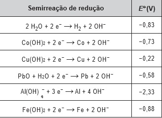
Qual é a outra espécie que está presente na composição
da mistura sólida comercial para aumentar sua eficiência?
Questão 92
As redes de alta tensão para transmissão de energia
elétrica geram campo magnético variável o suficiente
para induzir corrente elétrica no arame das cercas.
Tanto os animais quanto os funcionários das
propriedades rurais ou das concessionárias de energia
devem ter muito cuidado ao se aproximarem de uma
cerca quando esta estiver próxima a uma rede de alta
tensão, pois, se tocarem no arame da cerca, poderão
sofrer choque elétrico.
Para minimizar este tipo de problema, deve-se:
Questão 93
A esquistossomose (barriga-dʼágua) caracteriza-se
pela inflamação do fígado e do baço causada pelo verme
Schistosoma mansoni (esquistossomo). O contágio
ocorre depois que larvas do verme são liberadas na
água pelo caramujo do gênero Biomphalaria, seu
hospedeiro intermediário, e penetram na pele humana.
Após o diagnóstico, o tratamento tradicional utiliza
medicamentos por via oral para matar o parasita dentro
do corpo. Uma nova estratégia terapêutica baseia-se na
utilização de uma vacina, feita a partir de uma proteína
extraída do verme, que induz o organismo humano a
produzir anticorpos para combater e prevenir a doença.
Instituto Oswaldo Cruz/Fundação Oswaldo Cruz (IOC/Fiocruz). Fiocruz
anuncia nova fase de vacina para esquistossomose. Disponível em:
http://agencia.fiocruz.br. Acesso em: 3 maio 2019 (adaptado).
Uma vantagem da vacina em relação ao tratamento
tradicional é que ela poderá
Questão 94
Em 1962, um jingle (vinheta musical) criado por Heitor Carillo fez tanto sucesso que extrapolou as fronteiras do
rádio e chegou à televisão ilustrado por um desenho animado. Nele, uma pessoa respondia ao fantasma que batia
em sua porta, personificando o “frio”, que não o deixaria entrar, pois não abriria a porta e compraria lãs e cobertores
para aquecer sua casa. Apesar de memorável, tal comercial televisivo continha incorreções a respeito de conceitos
físicos relativos à calorimetria
.
DUARTE, M. Jingle é a alma do negócio: livro revela os bastidores das músicas de propagandas.
Disponível em: https://guiadoscuriosos.uol.com.br. Acesso em: 24 abr. 2019 (adaptado).
Para solucionar essas incorreções, deve-se associar à porta e aos cobertores, respectivamente, as funções de:
Questão 95
Glicólise é um processo que ocorre nas células, convertendo glicose em piruvato. Durante a prática de exercícios
físicos que demandam grande quantidade de esforço, a glicose é completamente oxidada na presença de O2.
Entretanto, em alguns casos, as células musculares podem sofrer um déficit de O2 e a glicose ser convertida em
duas moléculas de ácido lático. As equações termoquímicas para a combustão da glicose e do ácido lático são,
respectivamente, mostradas a seguir:
C6H12O6 (s) + 6 O2 (g) → 6 CO2 (g) + 6 H2O (l) ∆cH = −2 800 kJ
CH3CH(OH)COOH (s) + 3 O2 (g) → 3 CO2 (g) + 3 H2O (l) ∆cH = −1 344 kJ
O processo anaeróbico é menos vantajoso energeticamente porque
Questao 96
No quadro estão apresentadas informações sobre duas estratégias de sobrevivência que podem ser adotadas
por algumas espécies de seres vivos.
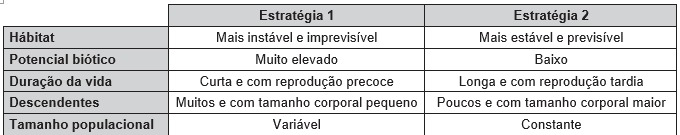
Na recuperação de uma área desmatada deveriam ser reintroduzidas primeiramente as espécies que adotam qual
estratégia?
Questao 97
transportam pela boca as sementes que caem das
árvores, mas, em vez de comê-las, enterram-nas em
outro lugar. Esse procedimento lhes permite salvar a
maioria de suas sementes enterradas para as épocas
mais secas, quando não há frutos maduros disponíveis.
Cientistas descobriram que as cutias roubam as
sementes enterradas por outras, e esse comportamento
de “ladroagem” faz com que uma mesma semente possa
ser enterrada dezenas de vezes.
Os olhos humanos normalmente têm três tipos de
cones responsáveis pela percepção das cores: um tipo
para tons vermelhos, um para tons azuis e outro para tons
verdes. As diversas cores que enxergamos são o resultado
da percepção das cores básicas, como indica a figura.
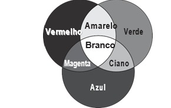
A protanopia é um tipo de daltonismo em que há
diminuição ou ausência de receptores da cor vermelha.
Considere um teste com dois voluntários: uma pessoa
com visão normal e outra com caso severo de protanopia.
Nesse teste, eles devem escrever a cor dos cartões que
lhes são mostrados. São utilizadas as cores indicadas
na figura.
Para qual cartão os dois voluntários identificarão a
mesma cor?
Questao 99
A cada safra, a quantidade de café beneficiado
é igual à quantidade de resíduos gerados pelo seu
beneficiamento. O resíduo pode ser utilizado como
fertilizante, pois contém cerca de 6,5% de pectina
(um polissacarídeo), aproximadamente 25% de açúcares
fermentáveis (frutose, sacarose e galactose), bem como
resíduos de alcaloides (compostos aminados) que não
foram extraídos no processo.
LIMA, L. K. S. et al. Utilização de resíduo oriundo da torrefação do
café na agricultura em substituição à adubação convencional.
ACSA — Agropecuária Científica no Semi-Árido,
v. 10, n. 1, jan.-mar., 2014 (adaptado).
Esse resíduo contribui para a fertilidade do solo, pois
Questao 100
Um alimento orgânico deve apresentar em sua
embalagem o selo de uma instituição certificadora,
garantindo ao consumidor que, além de ser um alimento
isento de agrotóxicos, também é produzido com técnicas
planejadas e controladas. A técnica de produção desses
alimentos causa menor impacto aos recursos naturais,
contribuindo para melhorar a qualidade de vida das
pessoas.
Nesse sistema de produção de alimentos vegetais, o
controle de insetos é manejado por meio do(a)
Questao 101
A eritropoetina (EPO) é um hormônio endógeno
secretado pelos rins que influencia a maturação dos
eritrócitos. Suas formas recombinantes, sintetizadas
em laboratório, têm sido usadas por alguns atletas em
esportes de resistência na busca por melhores resultados.
No entanto, a administração da EPO recombinante no
esporte foi proibida pelo Comitê Olímpico Internacional
e seu uso considerado doping
MARTELLI, A. Eritropoetina: síntese e liberação fisiológica e o uso de
sua forma recombinante no esporte. Perspectivas Online:
biológicas & saúde, v. 10, n. 3, 2013 (adaptado).
Uma influência que esse doping poderá exercer na
melhoria da capacidade física desses atletas está
relacionada ao transporte de
Questao 102
inimizar as trocas de calor com o ambiente externo.
Essa troca de calor é proporcional à condutividade
térmica k e à área interna das faces do recipiente,
bem como à diferença de temperatura entre o
ambiente externo e o interior do recipiente, além de ser
inversamente proporcional à espessura das faces.
A fim de avaliar a qualidade de dois recipientes
A (40 cm × 40 cm × 40 cm) e B (60 cm × 40 cm × 40 cm),
de faces de mesma espessura, uma estudante compara
suas condutividades térmicas kA e kB. Para isso suspende,
dentro de cada recipiente, blocos idênticos de gelo a
0 °C, de modo que suas superfícies estejam em contato
apenas com o ar. Após um intervalo de tempo, ela abre
os recipientes enquanto ambos ainda contêm um pouco
de gelo e verifica que a massa de gelo que se fundiu no
recipiente B foi o dobro da que se fundiu no recipiente A.
A razão kA
kB
é mais próxima de
Questao 103
Estudos mostram o desenvolvimento de biochips
utilizados para auxiliar o diagnóstico de diabetes melito,
doença evidenciada pelo excesso de glicose no organismo.
O teste é simples e consiste em duas reações sequenciais
na superfície do biochip, entre a amostra de soro sanguíneo
do paciente, enzimas específicas e reagente (iodeto de
potássio, KI), conforme mostrado na imagem.
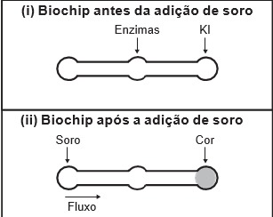
Após a adição de soro sanguíneo, o fluxo desloca-
-se espontaneamente da esquerda para a direita (ii)
promovendo reações sequenciais, conforme as
equações 1 e 2. Na primeira, há conversão de glicose
do sangue em ácido glucônico, gerando peróxido de
hidrogênio:
Equação 1
C6H12O6 (aq) + O2 (g) + H2O (l) Enzimas C6H12O7 (aq) + H2O2 (aq)
Na segunda, o peróxido de hidrogênio reage com
íons iodeto gerando o íon tri-iodeto, água e oxigênio.
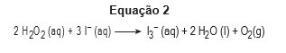
GARCIA, P. T. et al. A Handheld Stamping Process to Fabricate
Microfluidic Paper-Based Analytical Devices with Chemically
Modified Surface for Clinical Assays. RSC Advances,
v. 4, 13 ago. 2014 (adaptado).
O tipo de reação que ocorre na superfície do biochip,
nas duas reações do processo, é
Questao 104
Algumas toneladas de medicamentos para
uso humano e veterinário são produzidas por ano.
Os fármacos são desenvolvidos para serem estáveis,
mantendo suas propriedades químicas de forma a
atender a um propósito terapêutico. Após o consumo
de fármacos, parte de sua dosagem é excretada
de forma inalterada, persistindo no meio ambiente.
Em todo o mundo, antibióticos, hormônios, anestésicos,
anti-inflamatórios, entre outros, são detectados em
concentrações preocupantes no esgoto doméstico,
em águas superficiais e de subsolo. Dessa forma, a
ocorrência de fármacos residuais no meio ambiente
pode apresentar efeitos adversos em organismos
aquáticos e terrestres.
BILA, D. M.; DEZOTTI, M. Fármacos no meio ambiente.
Química Nova, v. 26, n. 4, ago. 2003 (adaptado).
Qual ação minimiza a permanência desses
contaminantes nos recursos hídricos?
Questao 105
Um teste de laboratório permite identificar alguns
cátions metálicos ao introduzir uma pequena quantidade
do material de interesse em uma chama de bico de
Bunsen para, em seguida, observar a cor da luz emitida.
A cor observada é proveniente da emissão de radiação
eletromagnética ao ocorrer a
Questao 106
Slackline é um esporte no qual o atleta deve se
equilibrar e executar manobras estando sobre uma fita
esticada. Para a prática do esporte, as duas extremidades
da fita são fixadas de forma que ela fique a alguns
centímetros do solo. Quando uma atleta de massa
igual a 80 kg está exatamente no meio da fita, essa se
desloca verticalmente, formando um ângulo de 10° com a
horizontal, como esquematizado na figura. Sabe-se que a
aceleração da gravidade é igual a 10 m s−2, cos(10°) = 0,98
e sen(10°) = 0,17. 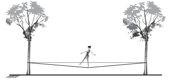
Qual é a força que a fita exerce em cada uma das
árvores por causa da presença da atleta?
Questao 107
Na piscicultura, costumam-se usar larvas de
Artemia (crustáceo) para alimentar larvas de peixes.
Ovos de Artemia são colocados em garrafas com água
salgada e, sob condições ótimas de temperatura, luz e
oxigênio, eles eclodem, liberando suas larvas, também
conhecidas como náuplios. Para recolher os náuplios,
coloca-se uma lâmpada branca fluorescente na boca da
garrafa e estes começam a subir em direção ao gargalo/h4>
Esse comportamento das artêmias é chamado de
Esse comportamento das artêmias é chamado de
Questao 108
O que é software livre
Por terem camada de valência completa,
alta energia de ionização e afinidade eletrônica
praticamente nula, considerou-se por muito tempo que
os gases nobres não formariam compostos químicos.
Porém, em 1962, foi realizada com sucesso a reação
entre o xenônio (camada de valência 5s25p6) e o
hexafluoreto de platina e, desde então, mais compostos
novos de gases nobres vêm sendo sintetizados.
Tais compostos demonstram que não se pode aceitar
acriticamente a regra do octeto, na qual se considera
que, numa ligação química, os átomos tendem a adquirir
estabilidade assumindo a configuração eletrônica de
gás nobre. Dentre os compostos conhecidos, um dos
mais estáveis é o difluoreto de xenônio, no qual dois
átomos do halogênio flúor (camada de valência 2s22p5)
se ligam covalentemente ao átomo de gás nobre para
ficarem com oito elétrons de valência.
Ao se escrever a fórmula de Lewis do composto de
xenônio citado, quantos elétrons na camada de valência
haverá no átomo do gás nobre?
Questao 109
Na madrugada de 11 de março de 1978, partes de
um foguete soviético reentraram na atmosfera acima da
cidade do Rio de Janeiro e caíram no Oceano Atlântico.
Foi um belo espetáculo, os inúmeros fragmentos
entrando em ignição devido ao atrito com a atmosfera
brilharam intensamente, enquanto “cortavam o céu”.
Mas se a reentrada tivesse acontecido alguns minutos
depois, teríamos uma tragédia, pois a queda seria na
área urbana do Rio de Janeiro e não no oceano. 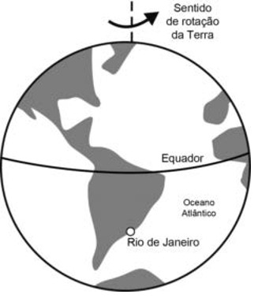
LAS CASAS, R. Lixo espacial. Observatório Astronômico Frei Rosário,
ICEx, UFMG. Disponível em: www.observatorio.ufmg.br.
Acesso em: 27 set. 2011 (adaptado).
De acordo com os fatos relatados, a velocidade angular
do foguete em relação à Terra no ponto de reentrada era
Questao 110
Com base nos experimentos de plantas de Mendel, foram estabelecidos três princípios básicos, que são
conhecidos como leis da uniformidade, segregação e distribuição independente. A lei da distribuição independente
refere-se ao fato de que os membros de pares diferentes de genes segregam-se independentemente, uns dos
outros, para a prole.
TURNPENNY, P. D. Genética médica. Rio de Janeiro: Elsevier, 2009 (adaptado).
Hoje, sabe-se que isso nem sempre é verdade. Por quê?
Questão 111
Em qualquer obra de construção civil é fundamental a utilização de equipamentos de proteção individual,
tal como capacetes. Por exemplo, a queda livre de um tijolo de massa 2,5 kg de uma altura de 5 m, cujo impacto
contra um capacete pode durar até 0,5 s, resulta em uma força impulsiva média maior do que o peso do tijolo.
Suponha que a aceleração gravitacional seja 10 m s−2 e que o efeito de resistência do ar seja desprezível.
A força impulsiva média gerada por esse impacto equivale ao peso de quantos tijolos iguais?
Questão112
Os hidrocarbonetos são moléculas orgânicas com uma série de aplicações industriais. Por exemplo, eles estão
presentes em grande quantidade nas diversas frações do petróleo e normalmente são separados por destilação
fracionada, com base em suas temperaturas de ebulição. O quadro apresenta as principais frações obtidas na
destilação do petróleo em diferentes faixas de temperaturas. 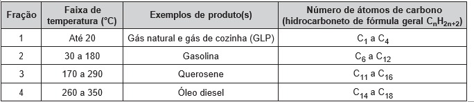
SANTA MARIA, L. C. et al. Petróleo: um tema para o ensino de química. Química Nova na Escola, n. 15, maio 2002 (adaptado)
Na fração 4, a separação dos compostos ocorre em temperaturas mais elevadas porque
Questão 113
O espectrômetro de massa de tempo de voo é
um dispositivo utilizado para medir a massa de íons.
Nele, um íon de carga elétrica q é lançado em uma região
de campo magnético constante B, descrevendo uma
trajetória helicoidal, conforme a figura. Essa trajetória
é formada pela composição de um movimento circular
uniforme no plano yz e uma translação ao longo do eixo x.
A vantagem desse dispositivo é que a velocidade angular
do movimento helicoidal do íon é independente de sua
velocidade inicial. O dispositivo então mede o tempo t de
voo para N voltas do íon. Logo, com base nos valores
q, B, N e t, pode-se determinar a massa do íon. 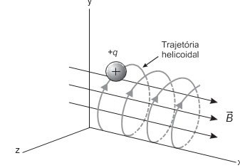
A massa do íon medida por esse dispositivo será
Questão 114
Na família Retroviridae encontram-se diversos vírus
que infectam aves e mamíferos, sendo caracterizada
pela produção de DNA a partir de uma molécula de RNA.
Alguns retrovírus infectam exclusivamente humanos,
não necessitando de outros hospedeiros, reservatórios
ou vetores biológicos. As infecções ocasionadas
por esses vírus vêm causando mortes e grandes
prejuízos ao desenvolvimento social e econômico.
Nesse contexto, pesquisadores têm produzido
medicamentos que contribuem para o tratamento
dessas doenças.
Que avanços tecnológicos têm contribuído para o
tratamento dessas infecções virais?
Questão 115
O concreto utilizado na construção civil é um
material formado por cimento misturado a areia, a brita
e a água. A areia é normalmente extraída de leitos
de rios e a brita, oriunda da fragmentação de rochas.
Impactos ambientais gerados no uso do concreto
estão associados à extração de recursos minerais e ao
descarte indiscriminado desse material. Na tentativa
de reverter esse quadro, foi proposta a utilização de
concreto reciclado moído em substituição ao particulado
rochoso graúdo na fabricação de novo concreto,
obtendo um material com as mesmas propriedades que
o anterior.
O benefício ambiental gerado nessa proposta é a
redução do(a)
Questão 116
A fluidez da membrana celular é caracterizada pela
capacidade de movimento das moléculas componentes
dessa estrutura. Os seres vivos mantêm essa
propriedade de duas formas: controlando a temperatura
e/ou alterando a composição lipídica da membrana.
Neste último aspecto, o tamanho e o grau de insaturação
das caudas hidrocarbônicas dos fosfolipídios, conforme
representados na figura, influenciam significativamente
a fluidez. Isso porque quanto maior for a magnitude das
interações entre os fosfolipídios, menor será a fluidez da
membrana. 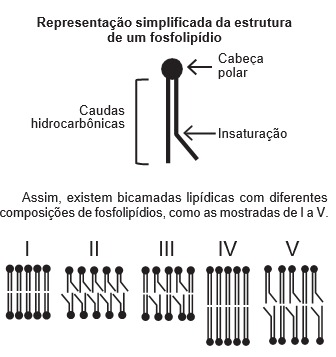
Qual das bicamadas lipídicas apresentadas possui
maior fluidez?
Questão 117
Em uma aula experimental de calorimetria, uma
professora queimou 2,5 g de castanha-de-caju crua para
aquecer 350 g de água, em um recipiente apropriado
para diminuir as perdas de calor. Com base na leitura da
tabela nutricional a seguir e da medida da temperatura da
água, após a queima total do combustível, ela concluiu
que 50% da energia disponível foi aproveitada. O calor
específico da água é 1 cal g−1 °C−1, e sua temperatura
inicial era de 20 °C. 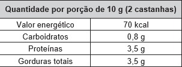
Qual foi a temperatura da água, em grau Celsius,
medida ao final do experimento?
Questão 118
OGrupos de pesquisa em todo o mundo vêm buscando
soluções inovadoras, visando a produção de dispositivos
para a geração de energia elétrica. Dentre eles,
pode-se destacar as baterias de zinco-ar, que combinam
o oxigênio atmosférico e o metal zinco em um eletrólito
aquoso de caráter alcalino. O esquema de funcionamento
da bateria zinco-ar está apresentado na figura. 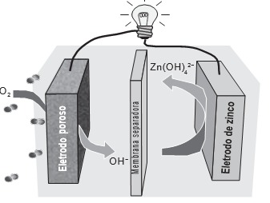
LI, Y.; DAI, H. Recent Advances in Zinc–Air Batteries.
Chemical Society Reviews, v. 43, n. 15, 2014 (adaptado).
No funcionamento da bateria, a espécie química formada
no ânodo é
Questão 119
Dois amigos se encontram em um posto de gasolina para calibrar os pneus de suas bicicletas.
Uma das bicicletas é de corrida (bicicleta A) e a outra, de passeio (bicicleta B). Os pneus de ambas as bicicletas
têm as mesmas características, exceto que a largura dos pneus de A é menor que a largura dos pneus de B.
Ao calibrarem os pneus das bicicletas A e B, respectivamente com pressões de calibração pA e pB, os amigos
observam que o pneu da bicicleta A deforma, sob mesmos esforços, muito menos que o pneu da bicicleta B.
Pode-se considerar que as massas de ar comprimido no pneu da bicicleta A, mA, e no pneu da bicicleta B, mB, são
diretamente proporcionais aos seus volumes.
Comparando as pressões e massas de ar comprimido nos pneus das bicicletas, temos:
Questão 120
A utilização de corantes na indústria de alimentos é bastante difundida e a escolha por corantes naturais vem
sendo mais explorada por diversas razões. A seguir são mostradas três estruturas de corantes naturais. 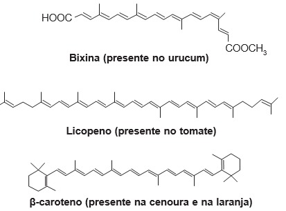
HAMERSKI, L.; REZENDE, M. J. C.; SILVA, B. V. Usando as cores da natureza para atender aos desejos do consumidor:
substâncias naturais como corantes na indústria alimentícia. Revista Virtual de Química, n. 3, 2013.
A propriedade comum às estruturas que confere cor a esses compostos é a presença de
Questão 121
Numa feira de ciências, um estudante utilizará o
disco de Maxwell (ioiô) para demonstrar o princípio da
conservação da energia. A apresentação consistirá em
duas etapas:
Etapa 1 - a explicação de que, à medida que o disco
desce, parte de sua energia potencial gravitacional
é transformada em energia cinética de translação e
energia cinética de rotação;
Etapa 2 - o cálculo da energia cinética de rotação do
disco no ponto mais baixo de sua trajetória, supondo o
sistema conservativo.
Ao preparar a segunda etapa, ele considera a
aceleração da gravidade igual a 10 m s−2 e a velocidade
linear do centro de massa do disco desprezível em
comparação com a velocidade angular. Em seguida,
mede a altura do topo do disco em relação ao chão no
ponto mais baixo de sua trajetória, obtendo 1
3 da altura
da haste do brinquedo.
As especificações de tamanho do brinquedo, isto é,
de comprimento (C), largura (L) e altura (A), assim como
da massa de seu disco de metal, foram encontradas
pelo estudante no recorte de manual ilustrado a seguir. 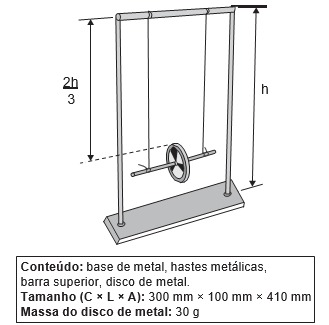
O resultado do cálculo da etapa 2, em joule, é:
Questão 122
O odor que permanece nas mãos após o contato com
alho pode ser eliminado pela utilização de um “sabonete
de aço inoxidável”, constituído de aço inox (74%), cromo
e níquel. A principal vantagem desse “sabonete” é que
ele não se desgasta com o uso. Considere que a principal
substância responsável pelo odor de alho é a alicina
(estrutura I) e que, para que o odor seja eliminado, ela
seja transformada na estrutura II. 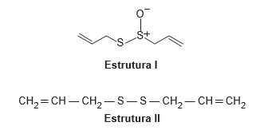
Na conversão de I em II, o “sabonete” atuará como um
Questão 123
A poluição radioativa compreende mais de
200 nuclídeos, sendo que, do ponto de vista de impacto
ambiental, destacam-se o césio-137 e o estrôncio-90.
A maior contribuição de radionuclídeos antropogênicos
no meio marinho ocorreu durante as décadas de 1950
e 1960, como resultado dos testes nucleares realizados
na atmosfera. O estrôncio-90 pode se acumular nos
organismos vivos e em cadeias alimentares e, em
razão de sua semelhança química, pode participar no
equilíbrio com carbonato e substituir o cálcio em diversos
processos biológicos.
FIGUEIRA, R. C. L.; CUNHA, I. I. L. A contaminação dos oceanos por
radionuclídeos antropogênicos. Química Nova, n. 21, 1998 (adaptado).
Ao entrar numa cadeia alimentar da qual o homem
faz parte, em qual tecido do organismo humano o
estrôncio-90 será acumulado predominantemente?
Questão 124
Uma das técnicas de reciclagem química do polímero PET [poli(tereftalato de etileno)] gera o tereftalato de
metila e o etanodiol, conforme o esquema de reação, e ocorre por meio de uma reação de transesterificação.
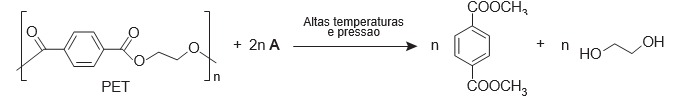
O composto A, representado no esquema de reação, é o
Questão 125
Durante sua evolução, as plantas apresentaram grande diversidade de características, as quais permitiram sua
sobrevivência em diferentes ambientes. Na imagem, cinco dessas características estão indicadas por números.
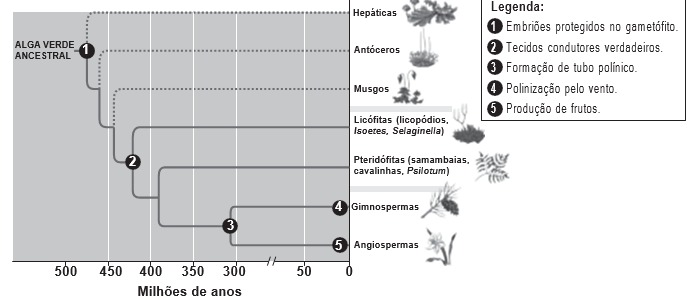
CAMPBELL, N. et al. Biologia. São Paulo: Artmed, 2010 (adaptado).
A aquisição evolutiva que permitiu a conquista definitiva do ambiente terrestre pelas plantas está indicada pelo número
Questão 126
Uma casa tem um cabo elétrico mal dimensionado,
de resistência igual a 10 Ω, que a conecta à rede elétrica
de 120 V. Nessa casa, cinco lâmpadas, de resistência
igual a 200 Ω, estão conectadas ao mesmo circuito que
uma televisão de resistência igual a 50 Ω, conforme
ilustrado no esquema. A televisão funciona apenas com
tensão entre 90 V e 130 V. 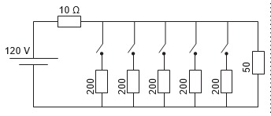
O número máximo de lâmpadas que podem ser ligadas
sem que a televisão pare de funcionar é:
Questão 127
O 2,4-dinitrofenol (DNP) é conhecido como
desacoplador da cadeia de elétrons na mitocôndria e
apresenta um efeito emagrecedor. Contudo, por ser
perigoso e pela ocorrência de casos letais, seu uso
como medicamento é proibido em diversos países,
inclusive no Brasil. Na mitocôndria, essa substância
captura, no espaço intermembranas, prótons (H+)
provenientes da atividade das proteínas da cadeia
respiratória, retornando-os à matriz mitocondrial.
Assim, esses prótons não passam
GRUNDLINGH, J. et al. 2,4-Dinitrophenol (DNP): a Weight
Loss Agent with Significant Acute Toxicity and Risk of Death.
Journal of Medical Toxicology, v. 7, 2011 (adaptado).
O efeito emagrecedor desse composto está relacionado
ao(à)
Questão 128
Em 1808, Dalton publicou o seu famoso livro
intitulado Um novo sistema de filosofia química
(do original A New System of Chemical Philosophy),
no qual continha os cinco postulados que serviam
como alicerce da primeira teoria atômica da matéria
fundamentada no método científico. Esses postulados
são numerados a seguir:
1. A matéria é constituída de átomos indivisíveis.
2. Todos os átomos de um dado elemento químico são
idênticos em massa e em todas as outras propriedades.
3. Diferentes elementos químicos têm diferentes
tipos de átomos; em particular, seus átomos têm
diferentes massas.
4. Os átomos são indestrutíveis e nas reações
químicas mantêm suas identidades.
5. Átomos de elementos combinam com átomos de
outros elementos em proporções de números inteiros
pequenos para formar compostos.
Após o modelo de Dalton, outros modelos baseados
em outros dados experimentais evidenciaram, entre
outras coisas, a natureza elétrica da matéria, a
composição e organização do átomo e a quantização da
energia no modelo atômico.
OXTOBY, D. W.; GILLIS, H. P.; BUTLER, L. J. Principles of Modern
Chemistry. Boston: Cengage Learning, 2012 (adaptado).
Com base no modelo atual que descreve o átomo, qual
dos postulados de Dalton ainda é considerado correto?
Questão 129
Um dos parâmetros de controle de qualidade de
polpas de frutas destinadas ao consumo como bebida é
a acidez total expressa em ácido cítrico, que corresponde
à massa dessa substância em 100 gramas de polpa
de fruta. O ácido cítrico é uma molécula orgânica que
apresenta três hidrogênios ionizáveis (ácido triprótico)
e massa molar 192 g mol−1. O quadro indica o valor
mínimo desse parâmetro de qualidade para polpas
comerciais de algumas frutas 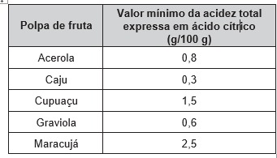
A acidez total expressa em ácido cítrico de uma
amostra comercial de polpa de fruta foi determinada.
No procedimento, adicionou-se água destilada a 2,2 g da
amostra e, após a solubilização do ácido cítrico, o sólido
remanescente foi filtrado. A solução obtida foi titulada
com solução de hidróxido de sódio 0,01 mol L−1, em que
se consumiram 24 mL da solução básica (titulante).
BRASIL. Ministério da Agricultura e do Abastecimento. Instrução
normativa n. 1, de 7 de janeiro de 2000. Disponível em:
www.agricultura.gov.br. Acesso em: 9 maio 2019 (adaptado).
Entre as listadas, a amostra analisada pode ser de qual
polpa de fruta?
Questão 130
Uma cozinheira colocou sal a mais no feijão que
estava cozinhando. Para solucionar o problema, ela
acrescentou batatas cruas e sem tempero dentro da
panela. Quando terminou de cozinhá-lo, as batatas
estavam salgadas, porque absorveram parte do caldo
com excesso de sal. Finalmente, ela adicionou água
para completar o caldo do feijão.
O sal foi absorvido pelas batatas por
Questão 131
A agricultura de precisão reúne técnicas agrícolas
que consideram particularidades locais do solo ou lavoura
a fim de otimizar o uso de recursos. Uma das formas
de adquirir informações sobre essas particularidades
é a fotografia aérea de baixa altitude realizada por um
veículo aéreo não tripulado (vant). Na fase de aquisição
é importante determinar o nível de sobreposição entre
as fotografias. A figura ilustra como uma sequência de
imagens é coletada por um vant e como são formadas
as sobreposições frontais. 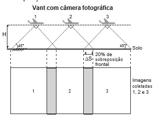
O operador do vant recebe uma encomenda na
qual as imagens devem ter uma sobreposição frontal de
20% em um terreno plano. Para realizar a aquisição das
imagens, seleciona uma altitude H fixa de voo de 1 000 m,
a uma velocidade constante de 50 m s−1. A abertura da
câmera fotográfica do vant é de 90°. Considere tg(45°) = 1.
Com que intervalo de tempo o operador deve adquirir
duas imagens consecutivas?
Questão 132
A maioria das pessoas fica com a visão embaçada
ao abrir os olhos debaixo dʼágua. Mas há uma exceção:
o povo moken, que habita a costa da Tailândia.
Essa característica se deve principalmente à
adaptabilidade do olho e à plasticidade do cérebro, o
que significa que você também, com algum treinamento,
poderia enxergar relativamente bem debaixo dʼágua.
Estudos mostraram que as pupilas de olhos de
indivíduos moken sofrem redução significativa debaixo
dʼágua, o que faz com que os raios luminosos incidam
quase paralelamente ao eixo óptico da pupila.
GISLÉN, A. et al. Visual Training Improves Underwater Vision in Children.
Vision Research, n. 46, 2006 (adaptado).
A acuidade visual associada à redução das pupilas é
fisicamente explicada pela diminuição
Questão 133
O “The Kidney Project” é um projeto realizado por
cientistas que pretendem desenvolver um rim biônico
que executará a maioria das funções biológicas
do órgão. O rim biônico possuirá duas partes que
incorporam recentes avanços de nanotecnologia,
filtração de membrana e biologia celular. Esse projeto
significará uma grande melhoria na qualidade de vida
para aquelas pessoas que dependem da hemodiálise
para sobrevivência.
Um experimento simples, que pode ser realizado
com materiais encontrados em casa, é realizado da
seguinte forma: adiciona-se um volume de etanol em
um copo de vidro e, em seguida, uma folha de papel.
Com o passar do tempo, observa-se um comportamento
peculiar: o etanol se desloca sobre a superfície do papel,
superando a gravidade que o atrai no sentido oposto,
como mostra a imagem. Para parte dos estudantes, isso
ocorre por causa da absorção do líquido pelo papel. 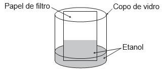
Do ponto de vista científico, o que explica o movimento
do líquido é a
Questão 135
Quando se considera a extrema velocidade com
que a luz se espalha por todos os lados e que, quando
vêm de diferentes lugares, mesmo totalmente opostos,
[os raios luminosos] se atravessam uns aos outros sem
se atrapalharem, compreende-se que, quando vemos
um objeto luminoso, isso não poderia ocorrer pelo
transporte de uma matéria que venha do objeto até nós,
como uma flecha ou bala atravessa o ar; pois certamente
isso repugna bastante a essas duas propriedades da
luz, principalmente a última.
HUYGENS, C. In: MARTINS, R. A. Tratado sobre a luz, de Cristian Huygens.
Caderno de História e Filosofia da Ciência, supl. 4, 1986.
O texto contesta que concepção acerca do
comportamento da luz?
MATEMÁTICA E SUAS TECNOLOGIAS
Questões de 136 a 180
Questão 136
Um grupo de países criou uma instituição responsável
por organizar o Programa Internacional de Nivelamento
de Estudos (PINE) com o objetivo de melhorar os índices
mundiais de educação. Em sua sede foi construída
uma escultura suspensa, com a logomarca oficial do
programa, em três dimensões, que é formada por suas
iniciais, conforme mostrada na figura.
Essa escultura está suspensa por cabos de aço, de
maneira que o espaçamento entre letras adjacentes é o
mesmo, todas têm igual espessura e ficam dispostas em
posição ortogonal ao solo, como ilustrado a seguir.
Ao meio-dia, com o sol a pino, as letras que formam
essa escultura projetam ortogonalmente suas sombras
sobre o solo.
A sombra projetada no solo é
Questão 137
A Hydrangea macrophylla é uma planta com flor azul
ou cor-de-rosa, dependendo do pH do solo no qual está
plantada. Em solo ácido (ou seja, com pH < 7) a flor é
azul, enquanto que em solo alcalino (ou seja, com pH > 7)
a flor é rosa. Considere que a Hydrangea cor-de-rosa mais
valorizada comercialmente numa determinada região seja
aquela produzida em solo com pH inferior a 8. Sabe-se
que pH = - log10x, em que x é a concentração de íon
hidrogênio (H+).
Para produzir a Hydrangea cor-de-rosa de maior
valor comercial, deve-se preparar o solo de modo que
x assuma
Questão 138
Uma pessoa, que perdeu um objeto pessoal quando
visitou uma cidade, pretende divulgar nos meios de
comunicação informações a respeito da perda desse
objeto e de seu contato para eventual devolução.
No entanto, ela lembra que, de acordo com o Art. 1 234
do Código Civil, poderá ter que pagar pelas despesas
do transporte desse objeto até sua cidade e poderá ter
que recompensar a pessoa que lhe restituir o objeto
em, pelo menos, 5% do valor do objeto.
Ela sabe que o custo com transporte será de
um quinto do valor atual do objeto e, como ela tem
muito interesse em reavê-lo, pretende ofertar o maior
percentual possível de recompensa, desde que o
gasto total com as despesas não ultrapasse o valor
atual do objeto.
Nessas condições, o percentual sobre o valor do objeto,
dado como recompensa, que ela deverá ofertar é igual a
Questão 139
Uma empresa presta serviço de abastecimento de água em uma cidade. O valor mensal a pagar por esse
serviço é determinado pela aplicação de tarifas, por faixas de consumo de água, sendo obtido pela adição dos
valores correspondentes a cada faixa.
• Faixa 1: para consumo de até 6 m3, valor fixo de R$ 12,00;
• Faixa 2: para consumo superior a 6 m3 e até 10 m3, tarifa de R$ 3,00 por metro cúbico ao que exceder a 6 m3;
• Faixa 3: para consumo superior a 10 m3, tarifa de R$ 6,00 por metro cúbico ao que exceder a 10 m3.
Sabe-se que nessa cidade o consumo máximo de água por residência é de 15 m3 por mês.
O gráfico que melhor descreve o valor P, em real, a ser pago por mês, em função do volume V de água consumido,
em metro cúbico, é
Questão 140
A gripe é uma infecção respiratória aguda de curta
duração causada pelo vírus influenza. Ao entrar no
nosso organismo pelo nariz, esse vírus multiplica-se,
disseminando-se para a garganta e demais partes das
vias respiratórias, incluindo os pulmões.
O vírus influenza é uma partícula esférica que tem
um diâmetro interno de 0,00011 mm.
Em notação científica, o diâmetro interno do vírus
influenza, em mm, é
Questão 141
Em um jogo on-line, cada jogador procura subir
de nível e aumentar sua experiência, que são dois
parâmetros importantes no jogo, dos quais dependem
as forças de defesa e de ataque do participante. A força
de defesa de cada jogador é diretamente proporcional ao
seu nível e ao quadrado de sua experiência, enquanto
sua força de ataque é diretamente proporcional à sua
experiência e ao quadrado do seu nível. Nenhum jogador
sabe o nível ou a experiência dos demais. Os jogadores
iniciam o jogo no nível 1 com experiência 1 e possuem
força de ataque 2 e de defesa 1. Nesse jogo, cada
participante se movimenta em uma cidade em busca de
tesouros para aumentar sua experiência. Quando dois
deles se encontram, um deles pode desafiar o outro
para um confronto, sendo o desafiante considerado
o atacante. Compara-se então a força de ataque do
desafiante com a força de defesa do desafiado e vence
o confronto aquele cuja força for maior. O vencedor do
desafio aumenta seu nível em uma unidade. Caso haja
empate no confronto, ambos os jogadores aumentam
seus níveis em uma unidade.
Durante um jogo, o jogador J1, de nível 4 e experiência 5,
irá atacar o jogador J2, de nível 2 e experiência 6.
O jogador J1 venceu esse confronto porque a diferença
entre sua força de ataque e a força de defesa de seu
oponente era
Questão 142
Em um condomínio, uma área pavimentada, que
tem a forma de um círculo com diâmetro medindo 6 m,
é cercada por grama. A administração do condomínio
deseja ampliar essa área, mantendo seu formato
circular, e aumentando, em 8 m, o diâmetro dessa
região, mantendo o revestimento da parte já existente.
O condomínio dispõe, em estoque, de material
suficiente para pavimentar mais 100 m2 de área.
O síndico do condomínio irá avaliar se esse material
disponível será suficiente para pavimentar a região a
ser ampliada.
Utilize 3 como aproximação para π.
A conclusão correta a que o síndico deverá chegar,
considerando a nova área a ser pavimentada, é a de
que o material disponível em estoque
Questão 143
Os exercícios físicos são recomendados para o
bom funcionamento do organismo, pois aceleram o
metabolismo e, em consequência, elevam o consumo
de calorias. No gráfico, estão registrados os valores
calóricos, em kcal, gastos em cinco diferentes atividades
físicas, em função do tempo dedicado às atividades,
contado em minuto. 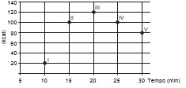
Qual dessas atividades físicas proporciona o maior
consumo de quilocalorias por minuto?
Questão 144
Um professor aplica, durante os cinco dias úteis
de uma semana, testes com quatro questões de
múltipla escolha a cinco alunos. Os resultados foram
representados na matriz. 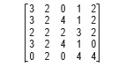
Nessa matriz os elementos das linhas de 1 a 5
representam as quantidades de questões acertadas
pelos alunos Ana, Bruno, Carlos, Denis e Érica,
respectivamente, enquanto que as colunas de
1 a 5 indicam os dias da semana, de segunda-feira
a sexta-feira, respectivamente, em que os testes
foram aplicados.
O teste que apresentou maior quantidade de acertos foi
o aplicado na
Questão 145
Um ciclista quer montar um sistema de marchas
usando dois discos dentados na parte traseira de sua
bicicleta, chamados catracas. A coroa é o disco dentado
que é movimentado pelos pedais da bicicleta, sendo
que a corrente transmite esse movimento às catracas,
que ficam posicionadas na roda traseira da bicicleta.
As diferentes marchas ficam definidas pelos diferentes
diâmetros das catracas, que são medidos conforme
indicação na figura. 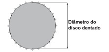
O ciclista já dispõe de uma catraca com 7 cm de
diâmetro e pretende incluir uma segunda catraca, de
modo que, à medida em que a corrente passe por ela,
a bicicleta avance 50% a mais do que avançaria se a
corrente passasse pela primeira catraca, a cada volta
completa dos pedais.
O valor mais próximo da medida do diâmetro da segunda
catraca, em centímetro e com uma casa decimal, é
Questão 146
O serviço de meteorologia de uma cidade emite
relatórios diários com a previsão do tempo. De posse
dessas informações, a prefeitura emite três tipos de
alertas para a população:
• Alerta cinza: deverá ser emitido sempre que a
previsão do tempo estimar que a temperatura
será inferior a 10 °C, e a umidade relativa do ar
for inferior a 40%;
• Alerta laranja: deverá ser emitido sempre que a
previsão do tempo estimar que a temperatura deve
variar entre 35 °C e 40 °C, e a umidade relativa do
ar deve ficar abaixo de 30%;
• Alerta vermelho: deverá ser emitido sempre que
a previsão do tempo estimar que a temperatura
será superior a 40 °C, e a umidade relativa do ar
for inferior a 25%.
Um resumo da previsão do tempo nessa cidade,
para um período de 15 dias, foi apresentado no gráfico.
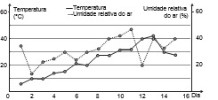
Decorridos os 15 dias de validade desse relatório,
um funcionário percebeu que, no período a que se refere
o gráfico, foram emitidos os seguintes alertas:
• Dia 1: alerta cinza;
• Dia 12: alerta laranja;
• Dia 13: alerta vermelho.
Em qual(is) desses dias o(s) aviso(s) foi(ram) emitido(s)
corretamente?
Questão 147
Uma administração municipal encomendou a pintura
de dez placas de sinalização para colocar em seu pátio
de estacionamento.
O profissional contratado para o serviço inicial
pintará o fundo de dez placas e cobrará um valor de
acordo com a área total dessas placas. O formato
de cada placa é um círculo de diâmetro d = 40 cm,
que tangencia lados de um retângulo, sendo que
o comprimento total da placa é h = 60 cm, conforme
ilustrado na figura. Use 3,14 como aproximação para π.
Qual é a soma das medidas das áreas, em centímetros
quadrados, das dez placas?
Questão 148
O rótulo da embalagem de um cosmético informa
que a dissolução de seu conteúdo, de acordo com suas
especificações, rende 2,7 litros desse produto pronto
para o uso. Uma pessoa será submetida a um tratamento
estético em que deverá tomar um banho de imersão
com esse produto numa banheira com capacidade de
0,3 m^3. Para evitar o transbordamento, essa banheira
será preenchida em 80% de sua capacidade.
Para esse banho, o número mínimo de embalagens
desse cosmético é
Questão 149
O slogan “Se beber não dirija”, muito utilizado em
campanhas publicitárias no Brasil, chama a atenção
para o grave problema da ingestão de bebida alcoólica
por motoristas e suas consequências para o trânsito.
A gravidade desse problema pode ser percebida
observando como o assunto é tratado pelo Código de
Trânsito Brasileiro. Em 2013, a quantidade máxima
de álcool permitida no sangue do condutor de um
veículo, que já era pequena, foi reduzida, e o valor
da multa para motoristas alcoolizados foi aumentado.
Em consequência dessas mudanças, observou-se
queda no número de acidentes registrados em uma
suposta rodovia nos anos que se seguiram às mudanças
implantadas em 2013, conforme dados no quadro. 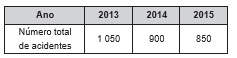
Suponha que a tendência de redução no número de
acidentes nessa rodovia para os anos subsequentes seja
igual à redução absoluta observada de 2014 para 2015.
Com base na situação apresentada, o número de
acidentes esperados nessa rodovia em 2018 foi de
Questão 150
Uma pessoa se interessou em adquirir um produto
anunciado em uma loja. Negociou com o gerente e
conseguiu comprá-lo a uma taxa de juros compostos
de 1% ao mês. O primeiro pagamento será um mês
após a aquisição do produto, e no valor de R$ 202,00.
O segundo pagamento será efetuado um mês após o
primeiro, e terá o valor de R$ 204,02. Para concretizar a
compra, o gerente emitirá uma nota fiscal com o valor do
produto à vista negociado com o cliente, correspondendo
ao financiamento aprovado.
O valor à vista, em real, que deverá constar na nota
fiscal é de
Questão 151
Três sócios resolveram fundar uma fábrica.
O investimento inicial foi de R$ 1 000 000,00.
E, independentemente do valor que cada um investiu
nesse primeiro momento, resolveram considerar que cada
um deles contribuiu com um terço do investimento inicial.
Algum tempo depois, um quarto sócio entrou para
a sociedade, e os quatro, juntos, investiram mais
R$ 800 000,00 na fábrica. Cada um deles contribuiu
com um quarto desse valor. Quando venderam a fábrica,
nenhum outro investimento havia sido feito. Os sócios
decidiram então dividir o montante de R$ 1 800 000,00
obtido com a venda, de modo proporcional à quantia
total investida por cada sócio.
Quais os valores mais próximos, em porcentagens,
correspondentes às parcelas financeiras que cada um
dos três sócios iniciais e o quarto sócio, respectivamente,
receberam?
Questão 152
Para contratar três máquinas que farão o reparo de
vias rurais de um município, a prefeitura elaborou um
edital que, entre outras cláusulas, previa:
• Cada empresa interessada só pode cadastrar uma
única máquina para concorrer ao edital;
• O total de recursos destinados para contratar o
conjunto das três máquinas é de R$ 31 000,00;
• O valor a ser pago a cada empresa será
inversamente proporcional à idade de uso
da máquina cadastrada pela empresa para o
presente edital.
As três empresas vencedoras do edital cadastraram
máquinas com 2, 3 e 5 anos de idade de uso.
Quanto receberá a empresa que cadastrou a máquina
com maior idade de uso?
Questão 153
Segundo o Instituto Brasileiro de Geografia e
Estatística (IBGE), o rendimento médio mensal
dos trabalhadores brasileiros, no ano 2000, era de
R$ 1 250,00. Já o Censo 2010 mostrou que, em 2010,
esse valor teve um aumento de 7,2% em relação a
2000. Esse mesmo instituto projeta que, em 2020, o
rendimento médio mensal dos trabalhadores brasileiros
poderá ser 10% maior do que foi em 2010.
Supondo que as projeções do IBGE se realizem, o
rendimento médio mensal dos brasileiros em 2020 será de
Questão 154
Charles Richter e Beno Gutenberg desenvolveram a
escala Richter, que mede a magnitude de um terremoto.
Essa escala pode variar de 0 a 10, com possibilidades
de valores maiores. O quadro mostra a escala de
magnitude local (Ms) de um terremoto que é utilizada
para descrevê-lo. 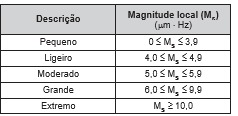
Para se calcular a magnitude local, usa-se a fórmula
Ms = 3,30 + log(A⋅f ), em que A representa a amplitude
máxima da onda registrada por um sismógrafo em
micrômetro (µm) e f representa a frequência da onda,
em hertz (Hz). Ocorreu um terremoto com amplitude
máxima de 2 000 µm e frequência de 0,2 Hz.
De acordo com os dados fornecidos, o terremoto
ocorrido pode ser descrito como
Questão 155
Após o Fórum Nacional Contra a Pirataria (FNCP)
incluir a linha de autopeças em campanha veiculada
contra a falsificação, as agências fiscalizadoras
divulgaram que os cinco principais produtos de
autopeças falsificados são: rolamento, pastilha de freio,
caixa de direção, catalisador e amortecedor.
Após uma grande apreensão, as peças falsas foram
cadastradas utilizando-se a codificação:
1: rolamento, 2: pastilha de freio, 3: caixa de direção,
4: catalisador e 5: amortecedor.
Ao final obteve-se a sequência: 5, 4, 3, 2, 1, 2, 3, 4,
5, 4, 3, 2, 1, 2, 3, 4, 5, 4, 3, 2, 1, 2, 3, 4, ... que apresenta
um padrão de formação que consiste na repetição de um
bloco de números. Essa sequência descreve a ordem
em que os produtos apreendidos foram cadastrados.
O 2 015º item cadastrado foi um(a)
Questão 156
Durante suas férias, oito amigos, dos quais dois são
canhotos, decidem realizar um torneio de vôlei de praia.
Eles precisam formar quatro duplas para a realização
do torneio. Nenhuma dupla pode ser formada por dois
jogadores canhotos.
De quantas maneiras diferentes podem ser formadas
essas quatro duplas?
Questão 157
As luminárias para um laboratório de matemática
serão fabricadas em forma de sólidos geométricos.
Uma delas terá a forma de um tetraedro truncado.
Esse sólido é gerado a partir de secções paralelas
a cada uma das faces de um tetraedro regular.
Para essa luminária, as secções serão feitas de
maneira que, em cada corte, um terço das arestas
seccionadas serão removidas. Uma dessas secções
está indicada na figura. 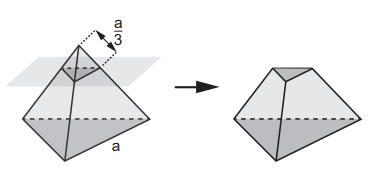
Essa luminária terá por faces
Questão 158
Comum em lançamentos de empreendimentos
imobiliários, as maquetes de condomínios funcionam
como uma ótima ferramenta de marketing para as
construtoras, pois, além de encantar clientes, auxiliam
de maneira significativa os corretores na negociação e
venda de imóveis.
Um condomínio está sendo lançado em um novo
bairro de uma cidade. Na maquete projetada pela
construtora, em escala de 1 : 200, existe um reservatório
de água com capacidade de 45 cm^3.
Quando todas as famílias estiverem residindo
no condomínio, a estimativa é que, por dia, sejam
consumidos 30 000 litros de água.
Em uma eventual falta de água, o reservatório cheio
será suficiente para abastecer o condomínio por
quantos dias?
Questão 159
O dono de um restaurante situado às margens de
uma rodovia percebeu que, ao colocar uma placa de
propaganda de seu restaurante ao longo da rodovia, as
vendas aumentaram. Pesquisou junto aos seus clientes
e concluiu que a probabilidade de um motorista perceber
uma placa de anúncio é 1/2
. Com isso, após autorização
do órgão competente, decidiu instalar novas placas com
anúncios de seu restaurante ao longo dessa rodovia, de
maneira que a probabilidade de um motorista perceber
pelo menos uma das placas instaladas fosse superior
a 99/100 .
A quantidade mínima de novas placas de propaganda a
serem instaladas é
Questão 160
O preparador físico de um time de basquete dispõe
de um plantel de 20 jogadores, com média de altura
igual a 1,80 m. No último treino antes da estreia em
um campeonato, um dos jogadores desfalcou o time
em razão de uma séria contusão, forçando o técnico a
contratar outro jogador para recompor o grupo.
Se o novo jogador é 0,20 m mais baixo que o anterior,
qual é a média de altura, em metro, do novo grupo?
Questao 161
Em uma fábrica de refrigerantes, é necessário
que se faça periodicamente o controle no processo
de engarrafamento para evitar que sejam envasadas
garrafas fora da especificação do volume escrito no rótulo.
Diariamente, durante 60 dias, foram anotadas as
quantidades de garrafas fora dessas especificações.
O resultado está apresentado no quadro
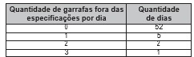
A média diária de garrafas fora das especificações no
período considerado é
Questao 162
O Sistema Métrico Decimal é o mais utilizado
atualmente para medir comprimentos e distâncias.
Em algumas atividades, porém, é possível observar
a utilização de diferentes unidades de medida.
Um exemplo disso pode ser observado no quadro. 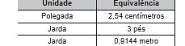
Assim, um pé, em polegada, equivale a
Questao 163
O Índice de Desenvolvimento Humano (IDH) é uma
medida usada para classificar os países pelo seu grau
de desenvolvimento. Para seu cálculo, são levados em
consideração a expectativa de vida ao nascer, tempo de
escolaridade e renda per capita, entre outros. O menor
valor deste índice é zero e o maior é um. Cinco países
foram avaliados e obtiveram os seguintes índices de
desenvolvimento humano: o primeiro país recebeu um
valor X , o segundo X , o terceiro X^1/3, o quarto X^2 e o
último X^3. Nenhum desses países zerou ou atingiu o
índice máximo.
Qual desses países obteve o maior IDH?
Questao 164
Um mestre de obras deseja fazer uma laje com
espessura de 5 cm utilizando concreto usinado,
conforme as dimensões do projeto dadas na figura.
O concreto para fazer a laje será fornecido por uma
usina que utiliza caminhões com capacidades máximas
de 2 m3, 5 m3 e 10 m3 de concreto. 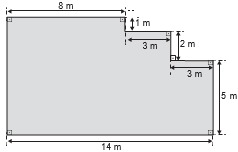
Qual a menor quantidade de caminhões, utilizando suas
capacidades máximas, que o mestre de obras deverá
pedir à usina de concreto para fazer a laje?
Questao 165
O álcool é um depressor do sistema nervoso central
e age diretamente em diversos órgãos. A concentração
de álcool no sangue pode ser entendida como a razão
entre a quantidade q de álcool ingerido, medida em
grama, e o volume de sangue, em litro, presente no
organismo do indivíduo. Em geral, considera-se que
esse volume corresponda ao valor numérico dado
por 8% da massa corporal m desse indivíduo, medida
em quilograma.
De acordo com a Associação Médica Americana,
uma concentração alcoólica superior a 0,4 grama por
litro de sangue é capaz de trazer prejuízos à saúde do
indivíduo.
A expressão relacionando q e m que representa a
concentração alcoólica prejudicial à saúde do indivíduo,
de acordo com a Associação Médica Americana, é
Questao 166
Construir figuras de diversos tipos, apenas
dobrando e cortando papel, sem cola e sem tesoura, é
a arte do origami (ori = dobrar; kami = papel), que tem
um significado altamente simbólico no Japão. A base
do origami é o conhecimento do mundo por base do
tato. Uma jovem resolveu construir um cisne usando
a técnica do origami, utilizando uma folha de papel de
18 cm por 12 cm. Assim, começou por dobrar a folha
conforme a figura 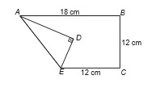
Após essa primeira dobradura, a medida do segmento
AE é
Questao 167
Os alunos de uma turma escolar foram divididos em
dois grupos. Um grupo jogaria basquete, enquanto o
outro jogaria futebol. Sabe-se que o grupo de basquete
é formado pelos alunos mais altos da classe e tem
uma pessoa a mais do que o grupo de futebol. A tabela
seguinte apresenta informações sobre as alturas dos
alunos da turma. Os alunos P, J, F e M medem, respectivamente,
1,65 m, 1,66 m, 1,67 m e 1,68 m, e as suas alturas não
são iguais a de nenhum outro colega da sala.
Segundo essas informações, argumenta-se que os
alunos P, J, F e M jogaram, respectivamente,
Questao 168
Uma empresa tem diversos funcionários. Um deles
é o gerente, que recebe R$ 1 000,00 por semana.
Os outros funcionários são diaristas. Cada um deles
trabalha 2 dias por semana, recebendo R$ 80,00 por
dia trabalhado.
Chamando de X a quantidade total de funcionários
da empresa, a quantia Y, em reais, que esta empresa
gasta semanalmente para pagar seus funcionários é expressa por
Questao 169
Um aplicativo de relacionamentos funciona da
seguinte forma: o usuário cria um perfil com foto e
informações pessoais, indica as características dos
usuários com quem deseja estabelecer contato e
determina um raio de abrangência a partir da sua
localização. O aplicativo identifica as pessoas que se
encaixam no perfil desejado e que estão a uma distância
do usuário menor ou igual ao raio de abrangência.
Caso dois usuários tenham perfis compatíveis e estejam
numa região de abrangência comum a ambos, o
aplicativo promove o contato entre os usuários, o que é
chamado de match.
O usuário P define um raio de abrangência com
medida de 3 km e busca ampliar a possibilidade de
obter um match se deslocando para a região central da
cidade, que concentra um maior número de usuários.
O gráfico ilustra alguns bares que o usuário P costuma
frequentar para ativar o aplicativo, indicados por
I, II, III, IV e V. Sabe-se que os usuários Q, R e S,
cujas posições estão descritas pelo gráfico, são
compatíveis com o usuário P, e que estes definiram
raios de abrangência respectivamente iguais a
3 km, 2 km e 5 km. 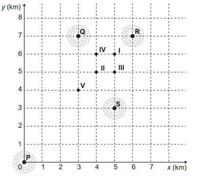
Com base no gráfico e nas afirmações anteriores, em
qual bar o usuário P teria a possibilidade de um match
com os usuários Q, R e S, simultaneamente?
Questao 170
A bula de um antibiótico infantil, fabricado na
forma de xarope, recomenda que sejam ministrados,
diariamente, no máximo 500 mg desse medicamento
para cada quilograma de massa do paciente. Um pediatra
prescreveu a dosagem máxima desse antibiótico para
ser ministrada diariamente a uma criança de 20 kg pelo
período de 5 dias. Esse medicamento pode ser comprado
em frascos de 10 mL, 50 mL, 100 mL, 250 mL e 500 mL.
Os pais dessa criança decidiram comprar a quantidade
exata de medicamento que precisará ser ministrada no
tratamento, evitando a sobra de medicamento. Considere
que 1 g desse medicamento ocupe um volume de 1 cm^3
A capacidade do frasco, em mililitro, que esses pais
deverão comprar é
Questao 171
Uma empresa confecciona e comercializa um
brinquedo formado por uma locomotiva, pintada na cor
preta, mais 12 vagões de iguais formato e tamanho,
numerados de 1 a 12. Dos 12 vagões, 4 são pintados
na cor vermelha, 3 na cor azul, 3 na cor verde e 2 na cor
amarela. O trem é montado utilizando-se uma locomotiva
e 12 vagões, ordenados crescentemente segundo suas
numerações, conforme ilustrado na figura.
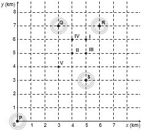
De acordo com as possíveis variações nas colorações
dos vagões, a quantidade de trens que podem ser
montados, expressa por meio de combinações, é
dada por
Questao 172
O gráfico a seguir mostra a evolução mensal das
vendas de certo produto de julho a novembro de 2011. 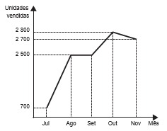
Sabe-se que o mês de julho foi o pior momento da
empresa em 2011 e que o número de unidades vendidas
desse produto em dezembro de 2011 foi igual à média
aritmética do número de unidades vendidas nos meses
de julho a novembro do mesmo ano.
O gerente de vendas disse, em uma reunião da
diretoria, que, se essa redução no número de unidades
vendidas de novembro para dezembro de 2011 se
mantivesse constante nos meses subsequentes, as
vendas só voltariam a ficar piores que julho de 2011
apenas no final de 2012.
O diretor financeiro rebateu imediatamente esse
argumento mostrando que, mantida a tendência,
isso aconteceria já em
Questao 173
Em um determinado ano, os computadores da receita federal de um país identificaram como inconsistentes
20% das declarações de imposto de renda que lhe foram encaminhadas. Uma declaração é classificada como
inconsistente quando apresenta algum tipo de erro ou conflito nas informações prestadas. Essas declarações
consideradas inconsistentes foram analisadas pelos auditores, que constataram que 25% delas eram fraudulentas.
Constatou-se ainda que, dentre as declarações que não apresentaram inconsistências, 6,25% eram fraudulentas.
Qual é a probabilidade de, nesse ano, a declaração de um contribuinte ser considerada inconsistente, dado que
ela era fraudulenta?
Questao 174
A taxa de urbanização de um município é dada pela razão entre a população urbana e a população total do
município (isto é, a soma das populações rural e urbana). Os gráficos apresentam, respectivamente, a população
urbana e a população rural de cinco municípios (I, II, III, IV, V) de uma mesma região estadual. Em reunião
entre o governo do estado e os prefeitos desses municípios, ficou acordado que o município com maior taxa de
urbanização receberá um investimento extra em infraestrutura. 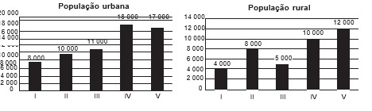
Segundo o acordo, qual município receberá o investimento extra?
Questao 175
Uma construtora pretende conectar um reservatório
central (Rc) em formato de um cilindro, com raio interno
igual a 2 m e altura interna igual a 3,30 m, a quatro
reservatórios cilíndricos auxiliares (R1, R2, R3 e R4),
os quais possuem raios internos e alturas internas
medindo 1,5 m. 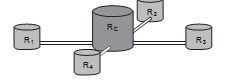
As ligações entre o reservatório central e os
auxiliares são feitas por canos cilíndricos com 0,10 m
de diâmetro interno e 20 m de comprimento, conectados
próximos às bases de cada reservatório. Na conexão
de cada um desses canos com o reservatório central há
registros que liberam ou interrompem o fluxo de água.
No momento em que o reservatório central está
cheio e os auxiliares estão vazios, abrem-se os quatro
registros e, após algum tempo, as alturas das colunas
de água nos reservatórios se igualam, assim que cessa
o fluxo de água entre eles, pelo princípio dos vasos
comunicantes.
A medida, em metro, das alturas das colunas de água
nos reservatórios auxiliares, após cessar o fluxo de
água entre eles, é
Questao 176
Para construir uma piscina, cuja área total da
superfície interna é igual a 40 m2, uma construtora
apresentou o seguinte orçamento:
• R$ 10 000,00 pela elaboração do projeto;
• R$ 40 000,00 pelos custos fixos;
• R$ 2 500,00 por metro quadrado para construção
da área interna da piscina.
Após a apresentação do orçamento, essa empresa
decidiu reduzir o valor de elaboração do projeto em
50%, mas recalculou o valor do metro quadrado para a
construção da área interna da piscina, concluindo haver
a necessidade de aumentá-lo em 25%. Além disso, a
construtora pretende dar um desconto nos custos fixos,
de maneira que o novo valor do orçamento seja reduzido
em 10% em relação ao total inicial.
O percentual de desconto que a construtora deverá
conceder nos custos fixos é de
Questao 177
Um grupo de engenheiros está projetando um motor
cujo esquema de deslocamento vertical do pistão dentro
da câmara de combustão está representado na figura.
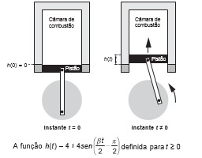
descreve como varia a altura h, medida em centímetro, da
parte superior do pistão dentro da câmara de combustão,
em função do tempo t, medido em segundo. Nas figuras
estão indicadas as alturas do pistão em dois instantes
distintos.
O valor do parâmetro β , que é dado por um número
inteiro positivo, está relacionado com a velocidade
de deslocamento do pistão. Para que o motor tenha
uma boa potência, é necessário e suficiente que, em
menos de 4 segundos após o início do funcionamento
(instante t = 0), a altura da base do pistão alcance por
três vezes o valor de 6 cm. Para os cálculos, utilize 3
como aproximação para π.
O menor valor inteiro a ser atribuído ao parâmetro β , de
forma que o motor a ser construído tenha boa potência, é
Questao 178
Um comerciante, que vende somente pastel, refrigerante em lata e caldo de cana em copos, fez um levantamento
das vendas realizadas durante a semana. O resultado desse levantamento está apresentado no gráfico. 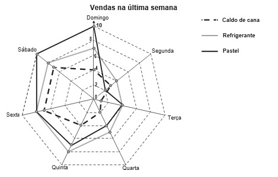
Ele estima que venderá, em cada dia da próxima semana, uma quantidade de refrigerante em lata igual à
soma das quantidades de refrigerante em lata e caldo de cana em copos vendidas no respectivo dia da última
semana. Quanto aos pastéis, estima vender, a cada dia da próxima semana, uma quantidade igual à quantidade
de refrigerante em lata que prevê vender em tal dia. Já para o número de caldo de cana em copos, estima que as
vendas diárias serão iguais às da última semana.
Segundo essas estimativas, a quantidade a mais de pastéis que esse comerciante deve vender na próxima semana é
Questao 179
Nos seis cômodos de uma casa há sensores de presença posicionados de forma que a luz de cada cômodo
acende assim que uma pessoa nele adentra, e apaga assim que a pessoa se retira desse cômodo. Suponha que o
acendimento e o desligamento sejam instantâneos.
O morador dessa casa visitou alguns desses cômodos, ficando exatamente um minuto em cada um deles.
O gráfico descreve o consumo acumulado de energia, em watt × minuto, em função do tempo t, em minuto, das
lâmpadas de LED dessa casa, enquanto a figura apresenta a planta baixa da casa, na qual os cômodos estão
numerados de 1 a 6, com as potências das respectivas lâmpadas indicadas. 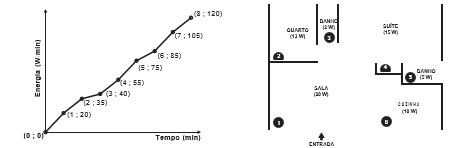
A sequência de deslocamentos pelos cômodos, conforme o consumo de energia apresentado no gráfico, é
Questao 180
Um casal planejou uma viagem e definiu como teto para o gasto diário um valor de até R$ 1 000,00. Antes de
decidir o destino da viagem, fizeram uma pesquisa sobre a taxa de câmbio vigente para as moedas de cinco países
que desejavam visitar e também sobre as estimativas de gasto diário em cada um, com o objetivo de escolher o
destino que apresentasse o menor custo diário em real.
O quadro mostra os resultados obtidos com a pesquisa realizada.
Nessas condições, qual será o destino escolhido para a viagem?